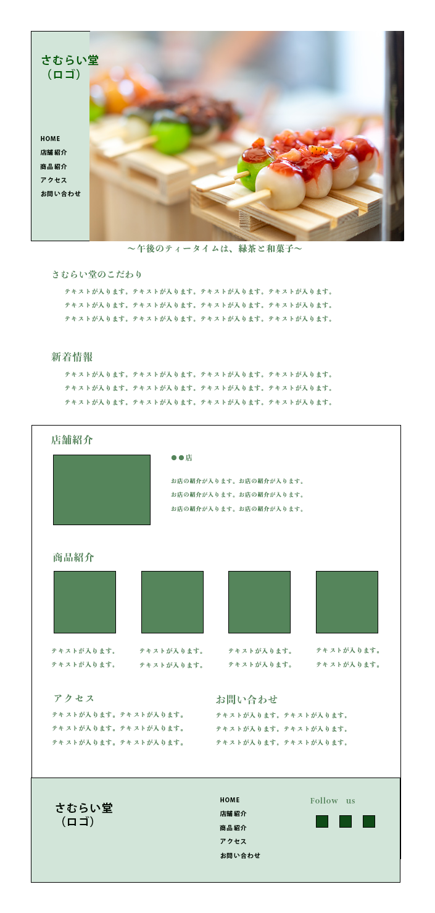

スクールの課題を元に初めて作成した作品になります。
メインカラーである緑を主体として和の雰囲気を残しつつも、
ターゲットが興味を惹きそうなデザインや動きを取り入れました。
全体的に綺麗にまとまったイメージで、シンプルに作成することを意識しております。
-
ターゲット
・和菓子離れしてしまった20代女性を新規客として獲得したい
-
目的
・若い人へ客層を広げるためWebサイトを作成する
-
要件
・老舗の和菓子屋「さむらい堂」
・TOPページに載せたい内容は下記の通り
・キャッチコピー：「午後のティータイムは、緑茶と和菓子」
・和菓子の写真（商品写真は後から送るので、まずは代わりのものを入れておいて欲しい）
・グローバルメニュー（→HOME、店舗紹介、商品紹介、アクセス、お問い合わせ）
・新着情報を表示するエリア
・さむらい堂のこだわり（文章はダミーでOK）
・メインカラー：お店ののれんが緑なので緑色を使用
・TwitterなどのSNSで発信していきたい
・「さむらい堂」のロゴを入れてほしい（テキストで入れても画像で作成してもどちらでもOK）
-
設計理由
・メインビジュアルでは若い女性が好みそうなデザインを作成し、ターゲットの興味を惹かせるようなデザインにしました。
・また、最近の若者はスマホ慣れしており、簡略化された機能に慣れております。
そこでグローバルメニューを左側に固定し、いつでも自分の閲覧したいページに移動できるよう設計しました。
・商品紹介や店舗紹介のページでは動きをつけてクリックしたくなるような動きを取り入れております。
・今後、SNSにも力を入れて行きたいとのことでしたのでInstagramのページを用意し、興味を持ったユーザーをInstagramのアカウントに誘導できるようにページを作成しました。 -
使用ツール
・photoshop/Visual Studio Code
-
制作範囲・期間
・デザイン・コーディング 8週間
-
その他
・web制作の勉強を始めてまもない頃のデザインも下記に載せておりますので、その当時からの変化を見て頂けますと幸いです。
-
一番最初に作成したデザイン
 -
スマホ版デザイン

-
PC版デザイン